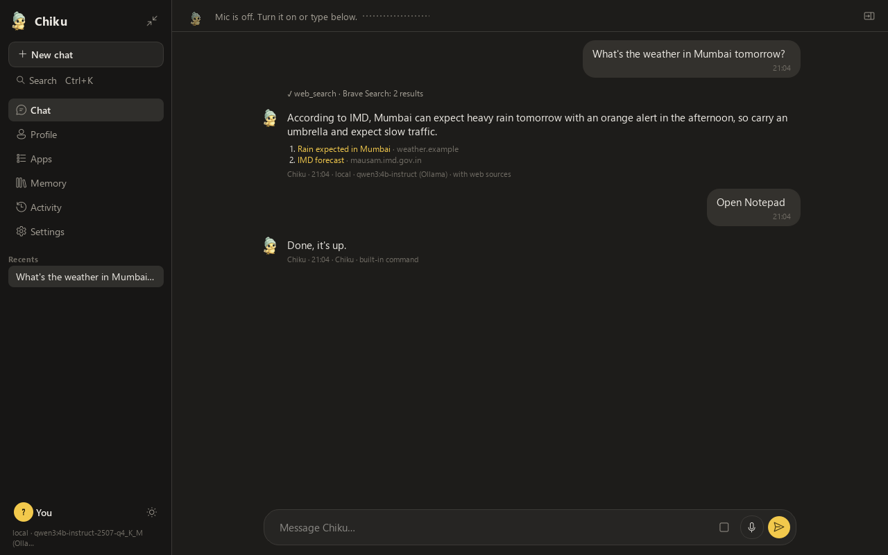
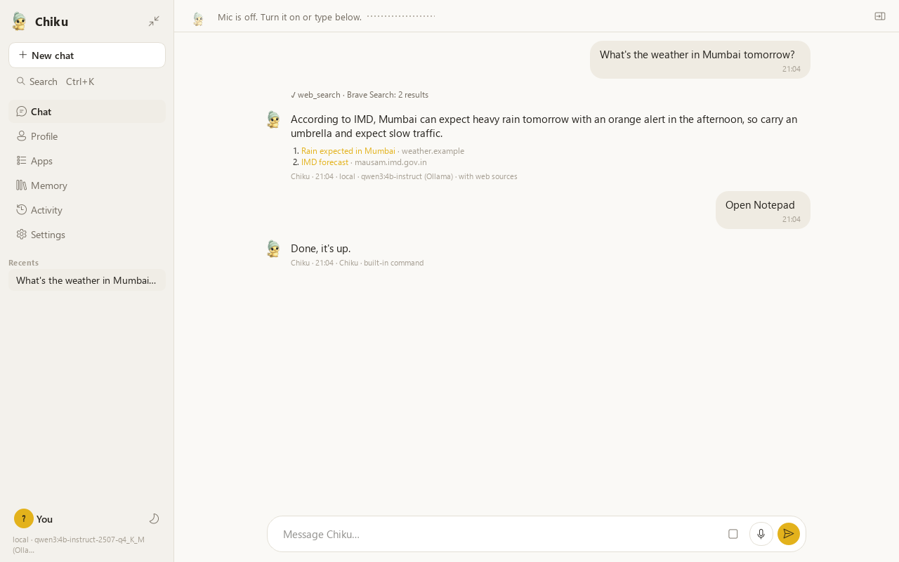
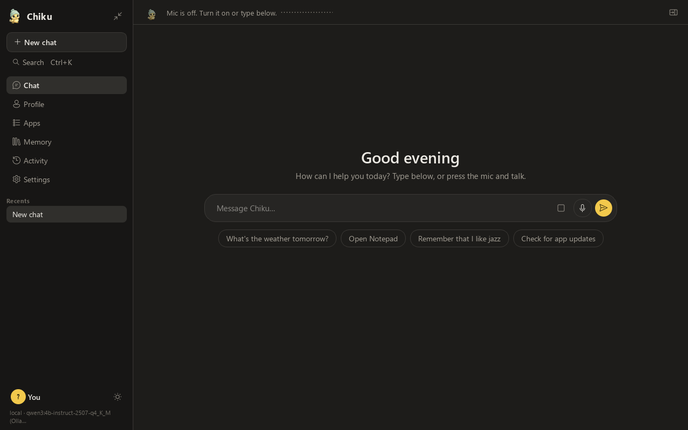
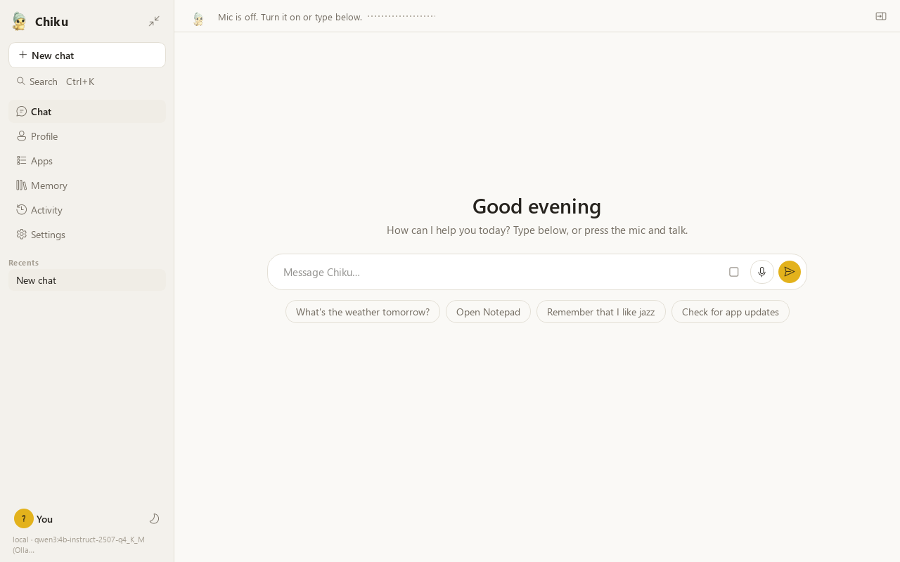
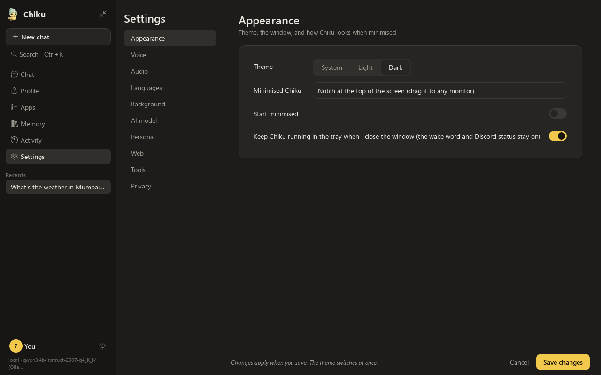
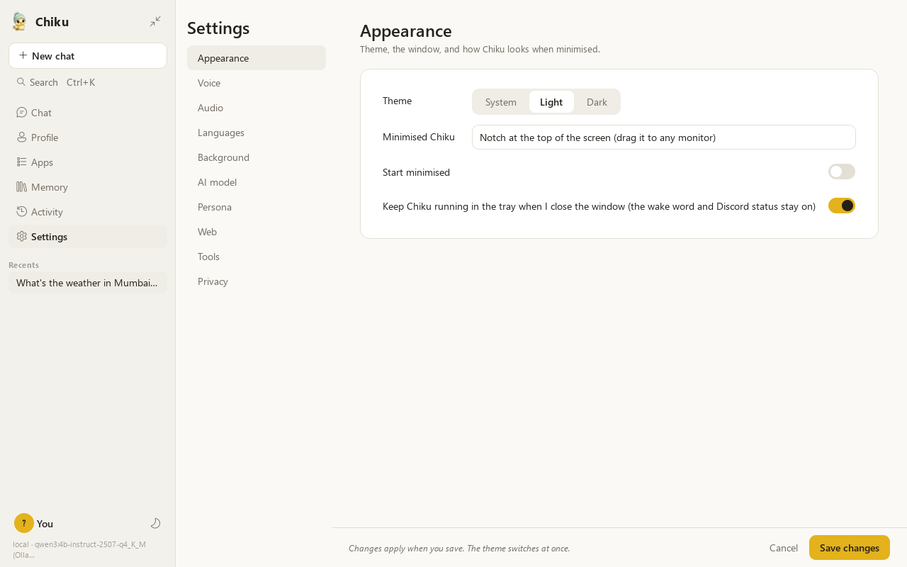

Talk naturally
Speak and she answers out loud, sentence by sentence. Interrupt her by talking, or type if you prefer.
Free & open source · Windows 10/11
Chiku listens, talks back, opens your apps, searches the web with sources and remembers what you ask. The voice, the speech recognition and the AI model all run on your own computer.
Installer for Windows 10/11 · no admin rights needed


What Chiku does
Speak and she answers out loud, sentence by sentence. Interrupt her by talking, or type if you prefer.
Opens and closes apps, finds and organises files, controls media and volume. Everything she does shows up in your Activity log.
Ask about the news, the weather or anything current. She searches, reads the best page, and shows you where the answer came from.
“Remember that I'm vegetarian.” You can see, edit or delete every memory, and she never stores passwords or card numbers.
She replies in the language you use, with natural voices for English, Hindi, Spanish, French, Italian, Portuguese, Japanese and Chinese.
Optional wake word: leave her in the tray and just say her name. The wake check runs on your PC and pauses when the screen is locked.
“Install VLC.” “Check for updates.” Uses winget's official sources, and you confirm every change.
Shrink her into a notch at the top of any screen, use Ctrl+K to jump anywhere, and pick a light or dark theme.
Private by design
Chiku is built to be local-first. Nothing is sent anywhere unless you ask for something that needs the internet, like a web search, and even then only the search words leave your PC.
Read the privacy detailsHow it works
Voice activity detection notices when you start and stop talking.
Whisper turns your speech into text, on your GPU or CPU.
A local language model (through Ollama) answers or picks the right tool.
Kokoro speaks the answer in a natural voice while it is still being written.




Install
Chiku-Setup.exe from the latest release.Questions
Yes. Chiku is open source under the GPL-3.0 licence. There is no account, subscription or tracking.
Only to download the models once, and for things that are online by nature, like web searches. Talking, opening apps, files and memory all work offline.
No. The microphone runs only while the mic button is on, or if you turn on the “Hey Chiku” wake word. Then the tray icon shows a green dot, and listening pauses while your screen is locked.
She understands any language the speech model knows and replies in yours. She has voices for English, Hindi, Spanish, French, Italian, Portuguese, Japanese and Chinese; other languages get text replies.
Yes. Pick any Ollama model in Settings, or point Chiku at another local server such as LM Studio. A cloud provider is possible too, but only if you switch it on yourself, and its replies are clearly labelled.
If you turn it on, your Discord profile shows that you are using Chiku, with a link to this project. It never includes anything you say.